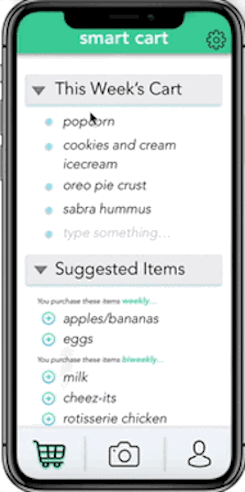

The Use of Algorithms
The Smart Cart would use both the user's personal past purchases and a larger database of product correlations to predict what someone may want to buy in the future.
Back to TopAs the world becomes increasingly fast-paced and digital, people often begin to forget daily activities, such as buying the grocery items they need. While this problem may seem small, the time and energy spent buying forgotten grocery items is much larger than it should be...
The Walmart "Smart Cart" is an app that solves the problem of forgotten grocery items. On the home screen, users can see their own personal shopping cart, where they can add their own items to the list. But wait - scroll down and that's where the magic happens!
The Smart Cart would use both the user's personal past purchases and a larger database of product correlations to predict what someone may want to buy in the future.
Back to TopIt would also track purchase history to see how frequently a user is buying a product, so it can suggest the same product to them - when the time comes!
Back to TopHi there! My name is Jillian and I'm a sophomore at UC Berkeley, majoring in Electrical Engineering and Computer Science + Business Administration. I'm a part of the Management, Entrepreneurship, and Technology (MET) program, which is a collaborative cohort of 50 students.
I'm passionate about data science and machine learning, and more broadly applying technology to solve consumer-centric problems in creative ways. I hope to use these tools to impact the world in a positive way, just as Walmart does each and every day.